- x = (2, 1, 0).
- x = (7, 9, 17).
- x = (1, 3, 2).
Solution:
- Not interior since x3 = 0.
- Feasible and positive, so interior.
- Violates Ax = b so not an interior point solution.
(Note: Keep the constraints as inequalities throughout this problem, so don’t introduce slack variables. An interior point must satisfy all the constraints strictly.)
- Solve the problem graphically.
- Determine the direction Δx of most rapid improvement in the objective function. Is this direction feasible at any interior point solution to the model?
- Show that x = (2, 1) is an interior point solution.
- Determine the maximum step α in the direction Δx from the point x0 that preserves feasibility. Let x1 = x0 + αΔx.
- Plot the move of part 2d and the resulting point x1 in the graph of part 2a.
- Explain why it is easier to find a good move direction at x0 than at x1.
Solution:
- Solution is x* = (0, 3.5).
- Δx = -c = (-2, 5), feasible at every interior point solution.
- (2, 1) satisfies Ax < b and x > 0.
- Need
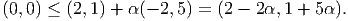 Also need to check Ax ≤ b. So need
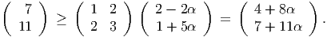 Thus we have four restrictions on α:
Thus, the maximum possible value of α is 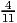, at which point the constraint 2x1 + 3x2 ≤ 11 becomes active.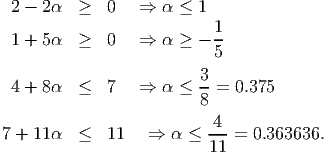 - We get x1 = (1
 , 2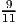).
, 2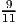).
- At x1, need to choose a direction Δx satisfying
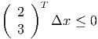 or otherwise we’d violate the second constraint.
We are going to examine applying the affine scaling algorithm to this problem, using different initial points xk. Notice that the problem has only one constraint, so the projection matrix will be a 1 × 1 matrix, ie, just a (positive) number.
- Let xk = [3, 1, 1, 1]T .
- Find an equivalent rescaled problem to (P) where the vector of all ones is feasible.
- Find a dual estimate vk.
- Find a direction in the rescaled problem.
- Find a steplength in the rescaled problem.
- Update the iterate xk.
- Now let xk = [0, 8, 0, 0]T . Find a new dual estimate vk and direction dk, and verify that c - AT vk has a negative component, but dk = 0.
- Now let xk = [8, 0, 0, 0]T . Find a new dual estimate vk and direction dk, and verify that vk is dual feasible and that dk = 0. What do you conclude?
Solution:
-
-
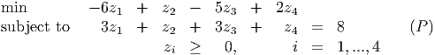 - Note that Ak(Ak)T = 20 and Akck = -30, so we have
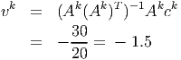 - The direction is
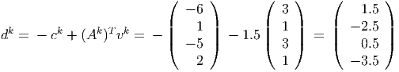 - The last component of z is driven to zero first, so we choose a steplength
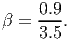 - We update to
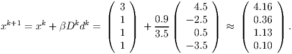
-
- We have Ak = (0, 8, 0, 0), ck = (0, 8, 0, 0)T , and so Ak(Ak)T = 64, Akck = 64. This gives
vk = 1 and
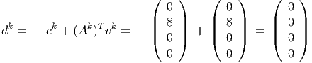 as required. Note that
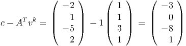 so vk is not dual feasible.
- We have Ak = (8, 0, 0, 0), ck = (-16, 0, 0, 0)T , and so Ak(Ak)T = 64, Akck = -128. This
gives vk = -2 and
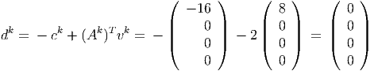 as required. Note that
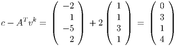 so vk is dual feasible. Thus, complementary slackness holds since dk = 0, and further vk is dual feasible, so we are optimal.
In this question, you will calculate a primal-dual barrier step. Take xk = [8, 4, 8]T . Let yk = 2. The duality gap is then 48.
- Calculate xisi for i = 1,…, 3, where s is the vector of dual slacks.
- Take μ = 8. Calculate primal and dual directions. Calculate new iterates with primal and dual step sizes of 0.95 of the way to the boundary.
Solution:
- We have
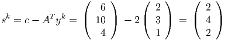 so
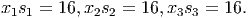 - To simplify the notation slightly, we omit the superscript k from the diagonal matrices
Xk and Dk. We have
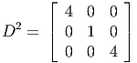 so
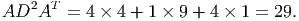 We also have
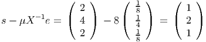 and
Thus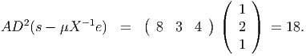 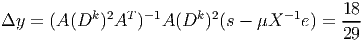 and

Hence
We have a check available: this direction is indeed in the nullspace of A.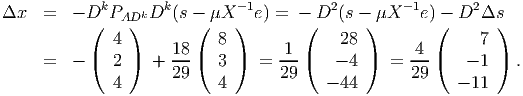 We can ignore the scale factors when calculating the step lengths (so in effect rescale the directions before calculating the step lengths). So scale so
We then obtain steplengths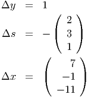 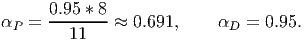 The updated iterates are
The updated primal objective function value is approximately 111.71 and the updated dual objective value is 106.2.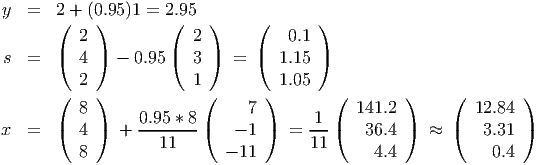 Check: ∑ i=13s ixi ≈ 5.51, as required.
We do better than the target μ value, because the initial iterate is perfectly centered.